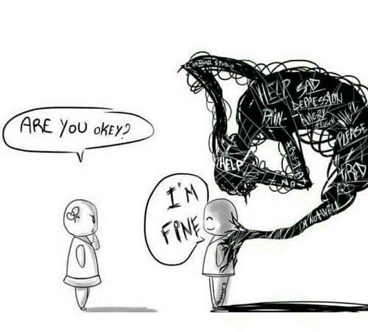
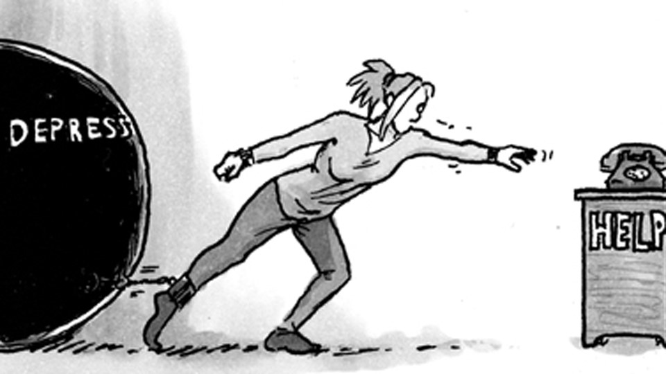

Health Checkups: Availability of Outpatient Consultations with a wide
array of innovative and cutting edge laboratory and diagnostic facilities.
Corporate Clients: Continuing innovations in the delivery of quality
pre-hospital and primary care in a patient friendly and cost effective
manner. It is our commitment to expand the services we offer to serve
you better.
Telerad RxDx-Kids: Collaboration of multidisciplinary team of
specialists, superspecialists for the health care and promotion of well-
being for your kids.
Homecare Services: Nursing assistance & on-call physician visits,
especially for those with mobility problems, ambulance service,
laboratory specimen collections and medicine delivery. We are
particularly proud of our physiotherapy services done in the comfort of
your home. Our homecare services include
ADVICE & TIPS FOR A HEALTHY LIFE
All of us at some point of the time wished upon our teeth to be pearly white.
From greater self-confidence to a positive first impression, a healthy smile can truly transform your visual appearance.
Below are 6 Tips to improve your Oral Health
Proper Brushing: One of the easiest ways to maintain a good oral hygiene is to adapt to proper brushing techniques. A continuous back and forth brushing technique does no good and can lead to cervical abrasion of teeth. Cervical abrasion causes enamel to wear off resulting in increased sensitivity. Place the brush at 45-degree angle so that the bristles are partly on the teeth and partly on the gums, now use back-and-forth, up-and-down motion, and make sure it's done gently in order to avoid bleeding. Brush your tongue and the roof of the mouth gently to remove microbes or any debris that may cause bad breath. Brushing twice in a day is a must; however, if your work or activities prevent you from doing this, thoroughly rinse your mouth with mouthwash or with water post eating.
Flossing: Flossing removes food debris and prevents plaque buildup while it's still soft. When debris stays on the tooth surface for a longer time, it forms a thin layer of bacterial biofilm which sticks onto the surface of the teeth. Flossing at night is fine for most people, but if you are prone to gum diseases then it is recommended that you floss in the morning as well.
Mouthwash: Use of a mouthwash is a must for a complete oral hygiene. A therapeutic mouthwash usually contains special ingredients that strengthen teeth and helps to treat many oral conditions preventing plaque buildup in between your teeth, on your gums and on the surfaces of the tooth that are difficult to access in normal brushing techniques. Mouthwash also contains fluoride which prevents caries and strengthens the outer layer of tooth “Enamel”. Not all mouthwash contains fluoride, so talk to your dentist for a mouthwash that suits best for you. With proper brushing technique, flossing and regular use of mouthwash you can keep your mouth healthy and smelling fresh.
Avoid Tobacco: All of us know that smoking is bad for health, so it should be no surprise that cigarettes and chewing tobacco are also harmful to your oral health. Cigarettes smoke contains chemicals that are known to cause cancer. Smoking reduces the blood flow to your gums, reduces the level of vitamin C which is needed to keep your gums healthy. Raises the temperature in the mouth, damaging and killing important cells.
Eat a healthy diet: Make sure your diet has a good amount of Calcium and Vitamin D which are important for maintaining the health of gums and teeth. Copper, iron, zinc, potassium are also required for maintaining healthy dental hygiene. Add milk, orange juice, yogurt, broccoli, cheese and other dairy products. You can also take calcium supplements but consult your physician before you start on any supplements.
Visit your dentist: Make sure to schedule dental checkups regularly, i.e. at least twice in a year. Many times a few changes in the oral cavity are normal and harmless, but some could also be warning signs of some serious disease. If you have a toothache or a jaw pain, book an appointment without a delay. Dental caries if diagnosed and treated at an initial stage helps in avoiding complicated procedures like root canal treatment and extractions.
Root canal treatment is a procedure to repair or save a badly damaged or infected tooth instead of removing it. Root canal treatment is done when the innermost layer of the tooth is damaged or the nerve gets infected. In some cases if the infection (decay) is too deep your dentist may also recommend you root canal treatment. The procedure involves removing the damaged section of the tooth (i.e. the pulp), cleaning and disinfecting the infected portion (the canals), followed by filling and sealing of the tooth and subsequent capping of the infected tooth. Initially after cleaning the canal and filling the canal the tooth is sealed with temporary filling which is soft in consistency.
"Depression means living in a body that fights to survive with a mind that tries to die"
Depression is not just sadness. Assume that you are having a throbbing toothache; not able to eat, drink or sleep. Now, imagine you are not able to get relief out of any medication and your friends and family completely ignore it. They come and tell you they're pretty sure it's not that bad.
That's exactly what depression feels like.
When a person is depressed it can affect their personal life and can also affect people who care for them. It is a real illness and is not a sign of a person's weakness.
Being sad and being depressed is not the same. Sadness is only one of the symptoms of depression.
Few alarming signs of depression

Feeling of being hopeless and low self esteemed.
Feeling of angry, anxious, and restless.
Loss of interest in activities and hobbies that you loved once
Lack of sleep
Change in appetite: too much or too less eating habits
Suicidal thought: Having thoughts of harming yourself
If you have any of these classic symptoms of depression that persisted for more than few weeks seek help immediately.
How can you help?

People suffering from depression are often asked to chill, relax and move on in life. But do these suggestions actually help? So what should you do?
Make it clear you want to help. And the first step to do that is to listen, listen to the person without judging him/her.
Encourage them to stay healthy and participate in social activities
Encourage a healthy lifestyle and some sort of physical activity. A regular jog or a fifteen minutes walk can temporarily boost the feel-good hormone called endorphins which may have long term benefits for people with depression.
Get enough sleep
Avoid alcohol and drugs. They may give you relief initially but worsens the situation on a long run.
Encourage them to seek professional help if required.
Pay attention to the warning signs. Work with your doctor and find what might trigger the depression symptoms.
Consult a specialist before starting on any supplements.
If they are suicidal then do not leave them alone
Remember! when you live with someone with depression, your support and encouragement can help them overcome it.
Heat stroke, sometimes also referred to as Sunstroke is a condition caused by overheating of your body
accompanied by dehydration that happens usually as a result of prolonged exposure to or physical
exertion in high temperatures.
It is a life-threatening condition where the body temperature rises above 104 F or higher. Heat stroke
can be fatal and can damage your brain, kidney, heart and muscles. If left unattended it can pose serious
complications or death.
Symptoms of Heat Stroke
A body temperature of more than 104 F is Hallmark symptom of Heat Stroke. However, some individuals
can develop symptoms of heat stroke suddenly and rapidly without warning.
Common symptoms include:
Dizziness
Nausea and vomiting
Hot and dry skin
Lack of sweat despite the heat
Strong or weak rapid heart beat
Shallow breathing
Altered mental behavior: Confusion, Disorientation, Irritability, Delirium and Slurring of Speech
Seizures and unconsciousness
People at Risk:
Heat Stroke is most likely affects elderly (Age above 50years) and children (Below 4years). The reason
behind this is that they adjust to heat slower than young individuals. Apart from them, heat stroke can
also affect young athletes, outdoor workers. However, it can also affect individuals who don't drink
enough water, having a chronic disease or drink an excessive amount of alcohol. Leaving infants,
children or animals in cars poses a risk for heat stroke. Even in moderate weather, the temperature
inside a closed car can reach dangerous levels.
Causes of Heat Stroke
Our body normally generates heat as a result of various metabolisms, which is usually dissipated in the
form of sweat. In some conditions of extreme heat, high humidity and vigorous physical exertion under
the direct sun the body may fail to dissipate this heat as a result of which the body temperature rises.
Hot Environment: It is non exertional or classic heatstroke that happens due to exposure to hot,
humid weather, especially for prolonged periods, such as two or three days. It occurs most often
in older adults and in people with chronic illness.
Dehydration: Lack of adequate fluid intake can result in Heat stroke. This happens as the body
fails to sweat enough to dissipate the heat which ultimately causes a rise in body temperature.
Strenuous activity: This happens due to increase in body temperature brought on by intense
physical activity in hot weather. Labors and people doing field job who are not exposed to high
temperature are most likely to be affected.
Too much of Alcohol and caffeine Intake: Too much intake of alcohol and caffeine adds up to
the dehydration and affects your body's ability to regulate body temperature.
Wearing the wrong fabric: Wearing clothes that prevent sweat from evaporating easily and
cooling down your body.
First aid for heat stroke:
Victims of heat stroke must receive immediate treatment to avoid permanent organ damage.
First and foremost, cool the victim.
Get the victim to a shady area, remove clothing, and apply cool or tepid water to the skin (for
example, you may spray the person with cool water from a garden hose), fan the victim to
promote sweating and evaporation, and place ice packs under the armpits and groin.
If the person is able to drink liquids, have them drink cool water or other cool beverages that do
not contain alcohol or caffeine.
Monitor body temperature with a thermometer and continue cooling efforts until the body
temperature drops to 101 to 102 F (38.3 to 38.8 C).
Always notify emergency services (080 -4926 1198) immediately. If their arrival is delayed, they
can give you further instructions for treatment of the victim.
Things to Avoid in This Summer
Switch on to loose-fitting and light color clothes. Wear clothes that allow your skin to breathe
and your sweat to evaporate.
Protect yourself against Sunburn: Use sunscreen, sunglasses, wide beam hat, caps or umbrellas
Avoid becoming dehydrated, drink plenty of fluids. Always carry a bottle of water with you when
you step out of the house.
Do not drink sugary and alcoholic beverages to rehydrate your body.
Avoid vigorous physical activities in hot and humid weather.
Does that wheezing sound of your kid at night make you worried? Or sending your child to school or the park
leave you panic struck?
Since Asthma is not a disease but a condition, the triggers cannot be cured. It is imperative to
practice preventive measures every day even if the symptoms are not exhibited.
Below are the few points that you need to keep in mind as a parent:
Get to know about the triggers: Asthma triggers are not same for all and need to be identified at the
earliest. Take the help of your doctor to identify these. A few triggering factors of asthma are pet hair,
dust, pollen grains, non-allergic irritants such as perfumes, etc.
Prepare Asthma Action Plan: An Asthma Action Plan is a strategic plan written for managing
Asthma. It shows the daily treatment which needs to be administered to your kid along with dosage
details. It also elaborates the ways to manage Asthma in the long term and what to do if the
condition worsens.
Make the child sit in an upright posture and let him take 1-2 puffs of reliever inhaler
immediately as prescribed by your doctor.
Ask him to try taking slow steady breaths
Rush to the physician immediately if the wheezing worsens and if there is an appearance of a
bluish tinge on the lips which is a sign of respiratory system failure.
Medications: It is very important to understand that taking regular medications and inhalers is
the only way to reduce the risk of Asthma attacks.
Inform your kid's teacher, nurse, caretaker, the babysitter should be notified about the Asthma Action
Plan and also medications which your child needs to take regularly.
Household chores like vacuum cleaning, dusting, changing bed covers, pillow covers and curtains
should be done regularly. But it is better to avoid doing these household chores when your kid is
around as asthma is triggered by dust, the fur of pets at home, mites, animal dander, pollen, etc
Care during Travel: It is very important to carry the medications and the inhalers in your hand
baggage along with the prescription. It is also important that you keep a hard copy of your Asthma
action plan in your bag.
Care during winter: Cold air is a major trigger for asthma symptoms such as wheezing and shortness of breath. Staying indoors on cold or windy days is advisable. If you have to take your kid out, make sure that you cover the child with a scarf over the nose and mouth and also remember to carry the child's inhaler
Myths: People with high blood pressure will experience symptoms, like
nervousness, sweating, difficulty sleeping or facial flushing.
Facts: High blood pressure is a largely symptomless "silent killer." If you ignore
your blood pressure because you think a certain symptom or sign will alert you to
the problem, you are taking a dangerous chance with your life
Hypertension also called as Silent Killer is a condition that has no or minimal
symptoms. In most of the cases, there are no signs of hypertension. Typically
accidentally people find out they have hypertension when they visit a doctor with
complaints like headache, dizziness, back pain etc. Researchers show that very
rarely do people have signs of hypertension and visit a doctor to get a high blood
pressure diagnosed. Evident signs of high blood pressure can appear when the
condition becomes severe for an extended period of time.
Pre-hypertension is a condition in which the blood pressure (BP) is between
120/80 mmHg and 139/89 mmHg. Systolic BP ranges between 120 to 139 mmHg
and the Diastolic BP ranges between 80 to 89 mmHg. Pre-hypertension should be
considered as a warning sign which indicates that you may get High blood
pressure in future.
Some of the conditions that contribute to pre-hypertension are:
Atherosclerosis
Kidney disease
Adrenal disease
Thyroid disease
Medications like contraceptive pills decongestant etc.
Condition that increases the risk of pre-hypertension
Age: Younger adults are at higher risk of prehypertension.
Family history: If your parent or a sibling has high BP, then you are more likely
to develop pre-hypertension
Lack of physical activity: Lack of exercise can increase the risk of pre-
hypertension.
Tobacco: Smoking or chewing tobacco can increase your blood pressure.
Alcohol: Taking more than two alcoholic drinks per day can increase your
blood pressure.
Lifestyle changes that you have to bring in
Right weight: Losing excess weight can reduce your blood pressure.
Exercise: Regular exercise helps in reducing weight and lowering blood
pressure
Diet: Foods that are high in saturated fats and Trans fats like butter, ghee,
margarine, deep-fried foods, bakery products, etc. should be avoided. Eat plenty
of vegetables, whole grains, fruits, low-fat dairy, fish and lean meat.
Alcohol: Limit your drinks to not more than one or two drinks per day if you
are a woman or a man respectively
How to prevent Pre-hypertension
Since there are no reliable signs and symptoms of hypertension hence the best
way to prevent pre-hypertension is regular health checks, once you are over 40
years and keep regularly monitoring it over that age. You should get your blood
pressure checked by a doctor or you can check it at home by using a digital BP
monitor.
Internet gives you a lot of information on vaccines but not all that you read is true. Sometimes
it is difficult to determine whether facts are falsified deliberately or due to lack of knowledge.
Below are the five most common myths that are believed by people without knowing the facts.
Myth 1: MMR vaccine causes Autism Fact: There is a widespread fear that MMR vaccines can cause Autism which originated from a
study published by a British Surgeon in 1998. However, the paper was completely discredited
due to serious procedural errors and ethical violation. Later many studies were conducted
which showed no evidence or links between the vaccine and likelihood of developing Autism,
Though the clear cause of autism is yet to be identified, but studies have identified symptoms
of Autism in kids well before administration of the Vaccine. Studies have also found evidence
that Autism develops in Utero, that's much before a baby is born or receives any vaccination.
Myth 2: Natural Immunity is better than vaccine acquired immunity Fact: In a case of a few conditions it is believed that the natural immunity results in stronger
immunity. However, the dangers and the complications of this approach outweigh the benefits.
But the fact is that getting exposed to any kind of infection, equally, increases your chances of
developing further complications from the disease. Hence, it is always safer to get
immunization done.
Myth 3: Flu Vaccine a big No No!! I am allergic to eggs Fact: The quantities of egg protein present in the vaccines now are much lesser than in the
earlier vaccines. So most individuals with mild allergic reaction can safely get vaccinated
appropriate for their health and age. However, it is a must to inform about the allergy to the
doctor before taking the shot.
Myth 4: Vaccination is for kids Fact: Vaccines such as Shingles vaccine is recommended for adults, especially post 60 years of
age. Also, a vaccine for tetanus, diphtheria and whooping cough needs a booster dose.
Myth 5: Vaccine has live viruses which can give you an infection. Fact: Most of the vaccines are made of viruses that are in their inactive state or in killed state.
These viruses aren't potent enough to give you any kind of infection.
Polycystic ovary syndrome (PCOS) also known as Stein-Leventhal syndrome is a common endocrine system disorder characterized by a hormonal imbalance among women of reproductive age.
The female body secretes two types of hormone i.e. Estrogen and Luteinizing hormone and very little amount of male hormone i.e. Androgen. In case of PCOS, the production of androgen is increased which leads to various problems in ovaries
Healthy ovaries make egg which when not fertilized gets released every month as a part of the healthy menstrual cycle. Women with PCOS may have enlarged ovaries which contain small collection of fluid called as follicles that are located in the ovary as seen in the ultrasound scan. These harmless follicles are usually up to 8mm in size and are underdeveloped sacs in which eggs develop. In the case of PCOS, the egg may not develop as it should have been or it may not be released during an ovulation as it normally should do.
Causes
The exact cause of PCOS is not known, but below are a few factors that may play a role:
Excess Insulin: Pancreas secretes insulin, a hormone that allows body cells to use sugar (glucose). In the case of insulin resistance, body's ability to use insulin effectively gets impaired as a result of which body has to produce an excess amount of insulin to make glucose available to all the body cells. An excess amount of insulin might affect the ovaries by increasing the androgen production, which interferes with the ovulation procedure.
Hormonal Imbalance:
Raised Androgens: A male hormone, produced in small amount in females. Hormonal imbalance leads to overproduction of androgen that prevents the ovaries from releasing an egg, which causes PCOS.
Raised luteinizing hormone (LH): This is a female hormone that stimulates ovulation; however, a raised level of LH has abnormal effects on ovaries.
Low level of sex hormone binding globulin (SHBG): This is a type of protein present in blood which binds with testosterone and reduces the effect of testosterone.
Raised prolactin: This condition is found in only some women who have PCOS. Prolactin is a hormone that stimulates breast gland to produce milk. Excessive secretion of prolactin can cause PCOS.
Risk Factors
Hereditary: It has been found that PCOS is common particularly with a family history. Researchers are also looking into the possibility of certain genes being linked to PCOS.
Signs and Symptoms
The symptoms associated with PCOS tend to start gradually. Hormonal changes typically start in early teens especially post first menstrual cycle. The symptoms in most of the cases are evident post weight gain. These symptoms are milder in the initial stages. While some patients may have only a few symptoms or some may have a lot of them. Below are the symptoms that are commonly seen in all cases of PCOS:
Acne
Increased weight and difficulty losing weight
Thicker and darker facial hair, excess hair on chest, back and belly.
Hair fall and thinning of hair on scalp
Weight gain
Irregular periods: Often women with PCOS, have very few menstrual cycles which can be as less as 8 cycles a year or may have very longer intervals which are more than 35days. Some women have no periods at all or may have very heavy bleeding that continues for weeks together.
Fertility issues: Women with PCOS have problems in conceiving leading to infertility problems
Depression
Diagnosis
Medical and Physical Examinations: Your Gynecologist will enquire about your period's pattern, type of flow, duration of your periods etc. Your Doctor will also check for the presence of extra body hair, weight and height to know if you have a healthy Body Mass Index (BMI).
Pelvic Examination: Your Doctor will check for signs of enlargement of ovaries due to cysts.
Vaginal Sonogram: Ultrasound will be required to check the endometrial lining and to further confirm the presence of any cyst in the ovaries.
Blood Test: This is done to check for the hormonal imbalance.
Treatment:
There is no definitive cure for PCOS but controlling it prevents further complications such as infertility, miscarriages, diabetes and heart disease. The line of treatment depends on multiple factors like your symptoms and whether you are planning a pregnancy.
Hormone therapy: If you are not planning for pregnancy, a hormonal therapy may help your ovary hormones. Birth control hormones keep your endometrial lining from building up for too long this helps in preventing Uterine Cancer. Birth control pills, patches or vaginal rings are prescribed as a part of hormonal therapy. Spironolactone is often used with combined birth control and this helps in reducing hair loss, acne and male pattern hair growth on face and body.
Healthy lifestyle: Hormonal therapy won't help with heart, blood pressure, and cholesterol and diabetes risk. This is why a healthy lifestyle is a must to prevent worsening of the condition along with the treatment.
Regular checkup: Regular checkups are important for detecting any associated complications such as high blood pressure, cholesterol uterine cancer etc.
Surgical treatment: Surgical treatment is the next level of treatment in cases who fail to show improvement after taking medicines. In the surgical procedure, ovarian function is improved by reducing the number of small cysts in the ovary.
Complications
Following are the complications that are associated with PCOS:
High blood pressure
Type 2 Diabetes
Cholesterol and lipid abnormality
Infertility
Depression and anxiety
Abnormal uterine bleeding
Uterine cancer
Gestational diabetes
Pregnancy-induced high blood pressure
Nonalcoholic Steatohepatitis: Liver Inflammation caused by fat accumulation in the liver.
Red Flags:
Seek immediate medical help if you notice:
The sudden excessive growth of facial hair and body hair.
The Severe outburst of acne and pimple.
Irregular periods or absence of periods.
Planning pregnancy when you have PCOS can be really challenging. Figuring out how to get
pregnant with PCOS is difficult, but is definitely not impossible. There are lifestyle changes as
well as several natural and medical treatments that increase fertility.
Let's know more about it
Notify your obstetrician
Women with PCOS need supervision of a trained Doctor in regulating the ovulation and
protecting against miscarriages. It is a must to notify your Doctor if you are planning pregnancy.
Your Doctor will help you manage your PCOS, change or discontinue your prescribed
medication and will monitor you during the early stage of pregnancy. Planning pregnancy with
PCOS, might need ovulation induction. Ovulation indication is a process of stimulation of
ovulation by Medications. Expecting mothers with PCOS are about three times as likely to
miscarry than expecting mothers without PCOS.
Exercises and weight loss
Exercise is very important as it helps maintain an active lifestyle and will enable you to shed
some kilos. Exercising releases a hormone called endorphin which will make the person feel
happy thus relieving her of all stress. Weight loss increases chances of spontaneous ovulation
and also improves cyclic menstrual function along with normalizing insulin and glucose levels in
the body. This will help balance your body's hormones and regularize menstrual cycle. The
regular menstrual cycle will result in regular ovulation and increased chances of fertilization.
Diet
Eat plenty of vegetables, some fruit in moderation, lean protein and some healthy snacks like
nuts and apple with almond butter. Avoided fried foods, milk, cheese and meat and processed
food. Include lots of fresh vegetables, fruits, nuts, beans and whole wheat. Keep a consistent
protein intake to moderate the release of carbohydrate into your blood circulation so that your
insulin level don't spike. A proper diet plan helps you maintain your insulin level which in turn
helps you in maintaining testosterone levels. A correct meal plan helps to balance the right
amount of protein, carbohydrate, and glycemic load.
Healthy lifestyle
A healthy lifestyle helps to conceive easily especially in the case of PCOS. It is recommended to
quit smoking and limit alcohol intake as it leads to an increased level of androgen that
contributes to PCOS syndrome.
Supplements:
While it is a fact that no pill or drinks can replace a healthy diet and lifestyle, but studies have
shown that taking certain dietary supplements like Vitamin D, folic acid, Omega
RMZ ECO World Infrastructure Pvt Ltd, Unit -07, Ground Floor The Bay C - 1, Wing - 8A, Sarjapur-Marathahalli, Outer Ring Rd, Adarsh Palm Retreat, Bellandur, Bengaluru, Karnataka 560103